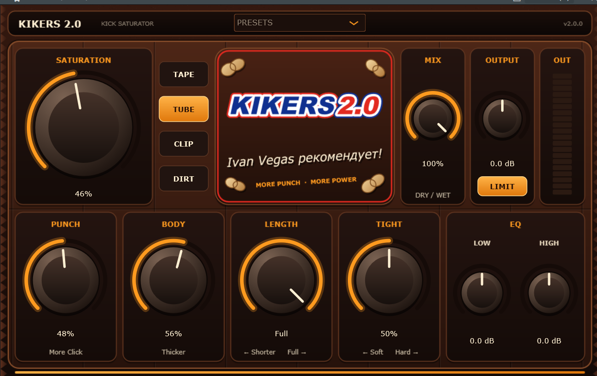

01 / SATURATION
Характер и плотность
ADAA-сатурация помогает добавить гармоники и уплотнить звук. Четыре режима — от мягкого до агрессивного.
Питательный жир для твоей бочки!
Сделай кик плотнее, мощнее и точнее. Сатурация, атака, низ и контроль хвоста — всё необходимое для обработки бочки в одном стильном окне.

KIKERS 2.0 — весь характер твоей бочки под рукой.
Инструменты для формы и характера кика — без лишних окон и сложной маршрутизации.
ADAA-сатурация помогает добавить гармоники и уплотнить звук. Четыре режима — от мягкого до агрессивного.
Подчеркни начальный щелчок удара, не поднимая весь сигнал целиком.
Добавь телу бочки глубины и массы, когда миксу не хватает фундаментального низа.
Укорачивай кик, чтобы освободить место для баса и сделать ритм собраннее.
Настрой характер затухания после заданной длины — плавно или жёстко.
Два EQ-шелфа, Dry/Wet MIX, OUTPUT и мягкий лимитер — всё в одном рабочем пространстве.
Поддерживаемые форматы и основные технические параметры.
KIKERS 2.0 от Ivan Vegas Audio. Выбери характер, сформируй атаку и освободи место для баса.
↓ Скачать плагинНа Windows — с программами, поддерживающими VST3, включая FL Studio, Ableton Live 11 и новее, Cubase и Reaper. На macOS доступны VST3 и Audio Unit; среди совместимых программ — Logic Pro, GarageBand, Ableton Live и Reaper.
Запусти KIKERS2-Setup.exe, затем перезапусти DAW и обнови список плагинов. В FL Studio: Options → Manage plugins → Find installed plugins.
Открой KIKERS2-macOS.pkg и пройди установку. После этого перезапусти DAW и обнови список плагинов. Установщик ставит VST3 и Audio Unit.
Лучше ставить его на отдельную дорожку с одной бочкой: функция LENGTH срабатывает на каждый удар и может заглушать другие звуки между ударами.
Не поддерживаются AAX для Pro Tools, VST2, 32-битные системы и Linux. Ableton Live 10 и старше не поддерживает VST3 на Windows.